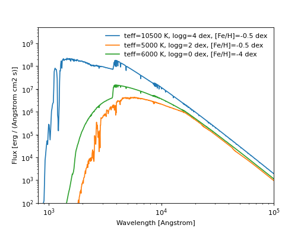

Atmosphere models
Contents
Atmosphere models#
For the precomputed models, we took the the Kurucz (ODFNEW/NOVER 2003) atmosphere library from the SVO Theoretical spectra Figure 1 shows the coverage of this library.
Figure 1. Kurucz (ODFNEW/NOVER 2003) atmosphere library coverage. These models span ranges of \(T_{eff}\) from 3500 K to 50000 K, \(\log g\) from 0 to 5 dex, and metallicity \([Fe/H]\) from -4 to 0 dex. Each square symbol indicates the availability of a synthetic spectrum.#
However, SVO Theoretical spectra Figure 1 provides many other libraries. Our approach is agnostics to the exact library itself. All files from SVO have the same format, but the spectra are not on the same wavelength scale (even for a single atmosphere source). The parameters of the spectra may vary from source to source. For instance, they may not provide microturbulence velocity or alpha/Fe etc. We technically require only \(T_{eff}\) and \([Fe/H]\) to be provided.
dustapprox.io.svoprovides means to read SVO atmosphere models.see
dustapprox.io.svo.spectra_file_reader(), anddustapprox.io.svo.get_svo_sprectum_units()
example usage To convert the flux to the observed flux at Earth, we need to multiply by a factor of \((R/D)^2\) where \(R\) is the stellar radius, and \(D\) is the distance to Earth in consistent units.
import matplotlib.pyplot as plt
from dustapprox.io import svo
models = ['models/Kurucz2003all/fm05at10500g40k2odfnew.fl.dat.txt',
'models/Kurucz2003all/fm05at5000g25k2odfnew.fl.dat.txt',
'models/Kurucz2003all/fm40at6000g00k2odfnew.fl.dat.txt']
label = 'teff={teff:4g} K, logg={logg:0.1g} dex, [Fe/H]={feh:0.1g} dex'
for fname in models:
data = svo.spectra_file_reader(fname)
lamb_unit, flux_unit = svo.get_svo_sprectum_units(data)
lamb = data['data']['WAVELENGTH'].values * lamb_unit
flux = data['data']['FLUX'].values * flux_unit
plt.loglog(lamb, flux,
label=label.format(teff=data['teff']['value'],
logg=data['logg']['value'],
feh=data['feh']['value']))
plt.legend(loc='upper right', frameon=False)
plt.xlabel('Wavelength [{}]'.format(lamb_unit))
plt.ylabel('Flux [{}]'.format(flux_unit))
plt.ylim(1e2, 5e9)
plt.xlim(800, 1e5)
(Source code, png, hires.png, pdf)
{kind=link}
{kind=link}

Figure 2. Examples of Kurucz models.#
Pre-compiled atmosphere libraries#
SVO Theoretical spectra provides many atmosphere libraries. Our approach is agnostics to the exact library itself. All files from SVO have the same format, but the spectra are not on the same wavelength scale (even for a single atmosphere source).
Warning
We do not provide an interface to download the atmospheres from SVO. (in this version at least)
We compiled tarballs of some atmosphere libraries we use in our models (and the associated references).
Important
Please cite the appropriate references we provided to the model atmospheres you use in your applications.
Todo
add CU8 atmospheres with proper references. (MARCS, PHOENIX, OB, A, BTSettl, libraries)